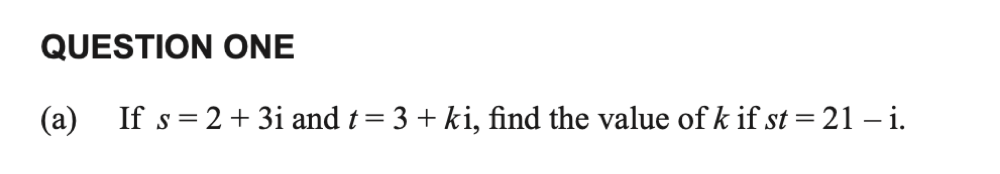

Level 3 Complex Numbers Walkthrough
2020 Complex Numbers · Q1(a)
2020 Complex Numbers
Question

If \(s=2+3i\) and \(t=3+ki\), find the value of \(k\) if \(st=21-i\).
First walkthrough idea
Focus to try first
Expand \(st\), use \(i^2=-1\), then match either the real or imaginary parts.
Step 1
Set up the multiplication
Substitute the given expressions for \(s\) and \(t\) into \(st\).
Show the first step’s working
Walkthrough overview
What this question practises
This 2020 walkthrough is part of AS91577 — Apply the algebra of complex numbers in solving problems.
Method: Multiplying complex numbers and matching corresponding parts.
This is Question 1(a) from the 2020 NCEA Level 3 Complex Numbers paper for AS91577 — Apply the algebra of complex numbers in solving problems. Use the guided hints to practise the method before revealing the full working.
Calc.nz is an independent learning resource. Compare questions, diagrams, and assessment information with the official NZQA resources for AS91577.
Page updated .
Learning summary
Review the method, not only the answer
This walkthrough helps you practise multiplying complex numbers and matching corresponding parts. Use the hints to plan the method, then repeat the question without hints and check each step.
Check
Expand with i² = −1, then equate real parts and imaginary parts separately. Substitute the result back into the original equation.
Calculus essentials: algebra, logarithms, rules, radians and domains
Continue practising
Try a related question: 2023 Complex Numbers · Q1(c). Attempt it before opening working, then return to this question later.
- All 2020 Complex Numbers walkthroughs
- All AS91577 Complex Numbers years
- Practise more questions using this skill: Complex-number algebra